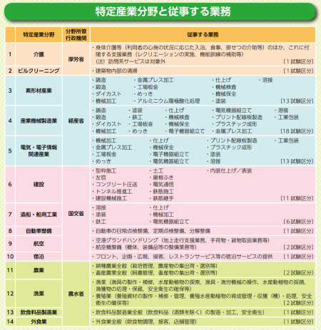

|
特定技能1号対象職種 |
1号対象職種
「相当程度の知識または経験を要する技能」を持つ外国人に与える「特定技能１号」は、単純作業など比較的簡単な仕事に就くことができます。３年以上の技能実習（技能実習２号）を修了するか、技能と日本語能力の試験に合格することを取得の要件としています。
在留期間は通算５年で、家族の帯同は認めていません。
「特定技能１号」は以下の１４業種を想定しています。

|
当事務所の支援業務強み |
現段階では中国とインドネシアの外国人就労者の支援業務ができるような状態になりました。
今後もできる限り、ベトナム等を含んだ国の支援を計画しております。
外国人ご本人や受入れ機関、登録支援機関に代わって、行政書士がビザ申請手続きを行います（申請取次）。
特定技能ビザの申請書類は、他のビザより分量が多いものとなっています。受入れ機関職員や登録支援機関職員も一定の要件を満たせば申請取次が可能ですが、本来の業務と並行して書類の準備や入管への申請を行うのは、至難の業といえるかもしれません。入管業務に慣れた行政書士へお任せいただくことを、お勧めします。
特定技能1号は、一定水準の日本語能力と技能が必要
国外から来日したい外国人や日本に在留している外国人（留学生など）が特定技能1号の在留資格（ビザ）を取得するためには、
・生活や業務に必要な日本語能力
・各分野における技能（一定の専門性・技能を用いて即戦力として稼働するために必要な知識や経験）が一定水準に達していることが求められます。
具体的には日本語能力と技能の両方の試験合格が要件となっています。
日本語試験＋技能試験の合格
上記の例外として、技能実習2号修了者（在留中で2号を終えて引き続き日本で働きたい外国人、既に終了し帰国しているが再来日し働きたい外国人）は、試験が免除されます。日本語能力と技能が一定水準に達しているとみなされるためです。
ただし、「技能実習の職種や作業」と「特定技能の分野」が異なる場合（技能実習と特定技能で従事する業務が異なる場合）は、上記の技能試験を受験し合格する必要がある可能性もあるので、注意が必要です。
つまり、特定技能1号外国人を受入れには、試験のスケジュールや合否が大きく左右するといえます。
特に試験の実施場所は受験者本人にとって大きな問題となりますが、試験のために短期ビザや観光ビザで来日を検討する場合は、以下の点を留意する必要があります。
・受験可能：過去に中長期在留者として在留経験あり
・受験不可：過去に日本への入国経験なし / 過去に短期ビザや観光ビザでの在留経験しかない
技能：技能試験
技能試験は、各分野によって状況が大きく異なっています。
特定技能対象14分野のうち、「介護」「宿泊」「外食業」が技能試験を先行して実施しています。この3分野は、当面の間は技能実習2号修了者がいないため、特定技能1号外国人の受入れには試験が必須なため、実施が急がれました。
残りの11分野については、現在実施に向けた準備が行われている状況で、当面は技能実習2号修了者からの移行（＝試験免除）が中心となります。
なお、国内で試験を実施する場合、（１）退学・除籍処分となった留学生、（２）失踪した技能実習生、（３）在留資格「特定活動（難民認定申請）」により在留する者、（４）在留資格「技能実習」による実習中の者については、その在留資格の性格上、当該試験の受験資格を認めない、とされています（各分野運用要領に記載）。
|
特定技能1号申請対象者 |
日本国内・日本国外で実施される「技能試験」と「日本語試験」に合格した方。
ただし、１４業種に該当する作業の技能実習２号を良好に修了した方は上記の試験が免除されます。
良好に修了したとは、原則として技能試験３級の実技試験に合格していることを指します。
日本で行われる「技能試験」「日本語試験」は留学生の方でも受験可能です。すでに学校を退学した方や技能実習中の方は受験することはできません。